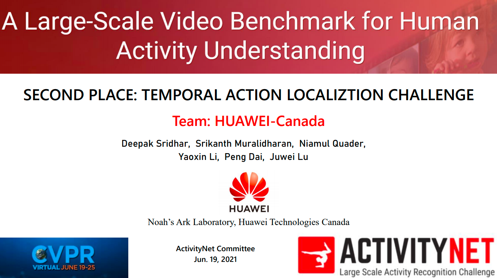
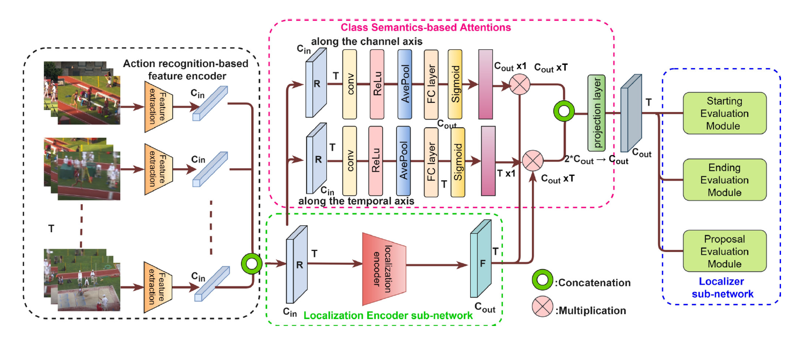
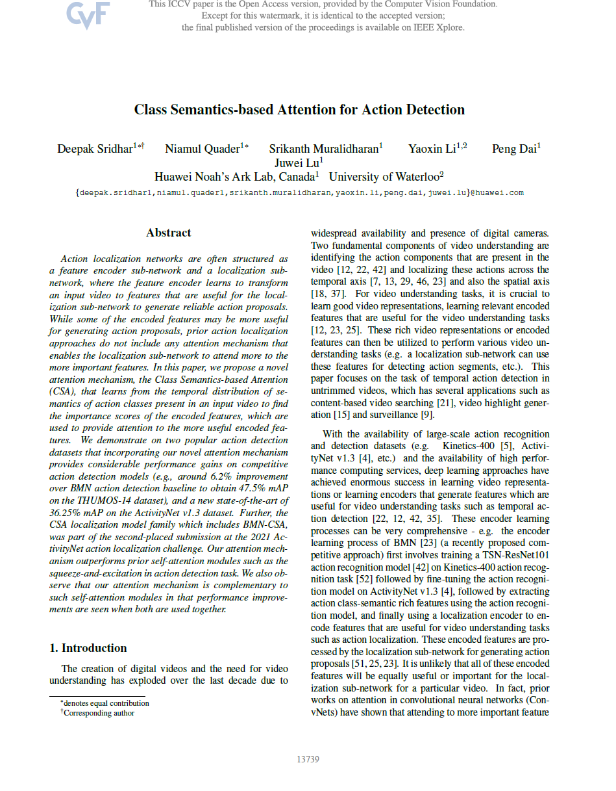

Class Semantics-based Attention for Action Detection
| Deepak Sridhar | Niamul Quader | Srikanth Muralidharan | Yaoxin Li | Peng Dai | Juwei Lu |
| Noah’s Ark Lab, Huawei Technologies Inc. Canada |
|  |
| Rank | Team | AmAP Score |
|---|---|---|
| Runner Up | HUAWEI-Canada | 44.11% |
Abstract
Action localization networks are often structured as a feature encoder sub-network and a localization subnetwork, where the feature encoder learns to transform
an input video to features that are useful for the localization sub-network to generate reliable action proposals. While some of the encoded features may be more useful
for generating action proposals, prior action localization approaches do not include any attention mechanism that enables the localization sub-network to attend more to the more important features. In this paper, we propose a novel
attention mechanism, the Class Semantics-based Attention (CSA), that learns from the temporal distribution of semantics of action classes present in an input video to find the importance scores of the encoded features, which are used to provide attention to the more useful encoded features.
We demonstrate on two popular action detection datasets that incorporating our novel attention mechanism provides considerable performance gains on competitive
action detection models (e.g., around 6.2% improvement over BMN action detection baseline to obtain 47.5% mAP on the THUMOS-14 dataset), and a new state-of-the-art of
36.25% mAP on the ActivityNet v1.3 dataset. Further, the CSA localization model family which includes BMN-CSA, was part of the second-placed submission at the 2021 ActivityNet action localization challenge.
Our attention mechanism outperforms prior self-attention modules such as the squeeze-and-excitation in action detection task. We also observe that our attention mechanism is complementary to
such self-attention modules in that performance improvements are seen when both are used together
System Diagram
|  |
The architecture of a generic action detection network with incorporation of our CSA attention mechanism. The generic action detection architecture consists of three major components: (1) an action recognition-based feature encoder that extracts class semantics rich features R, (2) a localization encoder sub-network that encodes R to F, and (3) a localization sub-network that processes F for generating action proposals. Our attention mechanism learns attention weights from R and applies attention on F both along the channel and the temporal axis, and then fuses the two attention-applied outputs. |
Paper
|  | "Class Semantics-based Attention for Action Detection",
ICCV 2021 |
Last updated: April 2022